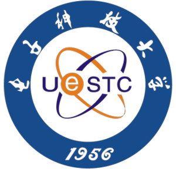
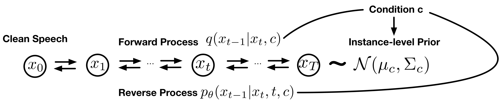
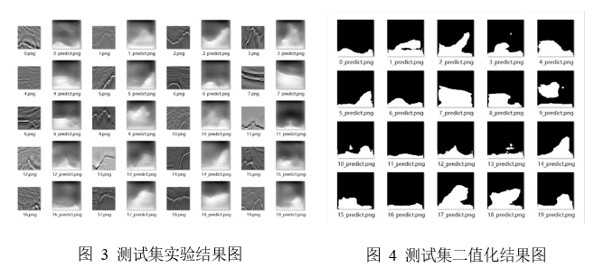
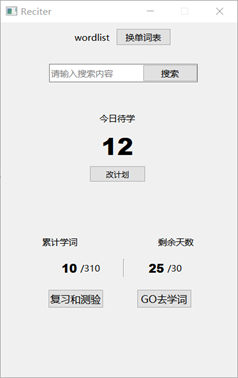
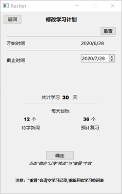
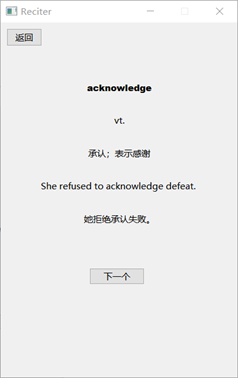
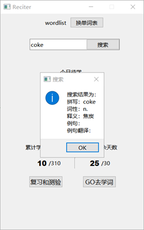

薛凯文 (Kevin Xue)
 |
本科生,中共党员 |
关于我
我现在是一名本科三年级的学生(将于2023年6月毕业), 就读于电子科技大学 信息与软件工程学院。 我的研究兴趣主要包括: 深度生成式模型, 计算机视觉, 机器学习 等，此外我热爱户外运动与音乐。我正在寻找申请研究生院（直博）的机会。
教育经历
|  | 本科 电子科技大学 (2019.9 ~ 2023.7)
|
科研经历
Prior-DiffuSE: Refine Speech with Diffusion Probabilistic Model
指导老师：电子科技大学周帆副教授
International Conference on Learning Representations 2023. (manuscript in preparation)

基于点云数据的密集人群目标检测算法
指导老师：中国科学院大学陈德元副教授
中国科学院大学生科创计划
项目经历
基于深度学习的智能儿童监护系统
 GitHub
GitHub
负责人; 电子科技大学大学生创新创业项目; 中国大学生计算机设计大赛四川赛区一等奖

基于 UNet 的深地目标检测算法
GitHub
负责人; 电子科技大学资源与环境学院项目

Reciter：一个简单的单词辅助记忆软件
GitHub
负责人; 《C++面向对象程序设计》课程设计
   